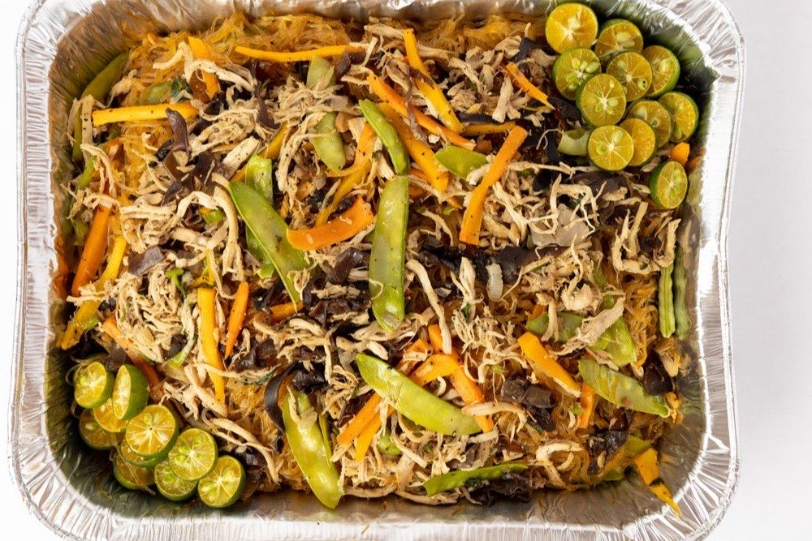

Pancit Canton (Filipino Stir-Fried Noodles)
Stir-fried noodles for long life — a birthday and fiesta staple

Pancit canton is the noodle dish served at nearly every Filipino birthday, because long noodles symbolize long life. Flour-and-egg canton noodles are stir-fried with a mix of meat, seafood, and vegetables, then finished with a squeeze of calamansi. It is endlessly flexible — use whatever proteins and vegetables you have.
Ingredients
- 250 g pancit canton (flour) noodles
- 200 g pork, thinly sliced
- 1 chicken breast, thinly sliced
- 100 g shrimp, peeled
- 2 cups cabbage, shredded
- 1 carrot, julienned
- 1 cup snap peas or snow peas
- 1 onion, sliced
- 3 cloves garlic, minced
- 3 tbsp soy sauce
- 1 tbsp oyster sauce
- 2 cups chicken broth
- Calamansi or lemon wedges, to serve
Instructions
- In a wide pan or wok, sauté the garlic and onion, then add the pork and chicken and cook until no longer pink.
- Add the shrimp and cook briefly, then pour in the chicken broth, soy sauce, and oyster sauce. Bring to a simmer.
- Add the carrot, snap peas, and cabbage and cook just until crisp-tender. Scoop out about half the vegetables and set aside so they stay bright.
- Add the canton noodles to the simmering broth and toss continuously until they absorb the liquid and soften, 3 to 5 minutes.
- Return the reserved vegetables, toss to combine, and serve hot with calamansi on the side.
Cook's tip: The noodles should drink up almost all the broth — add it a little at a time so they soften without turning soggy. A final squeeze of calamansi right before eating lifts the whole plate.
Curious which Filipino dish matches your personality? Take the Pinoy Food Personality Test or browse the full Filipino Food Guide.